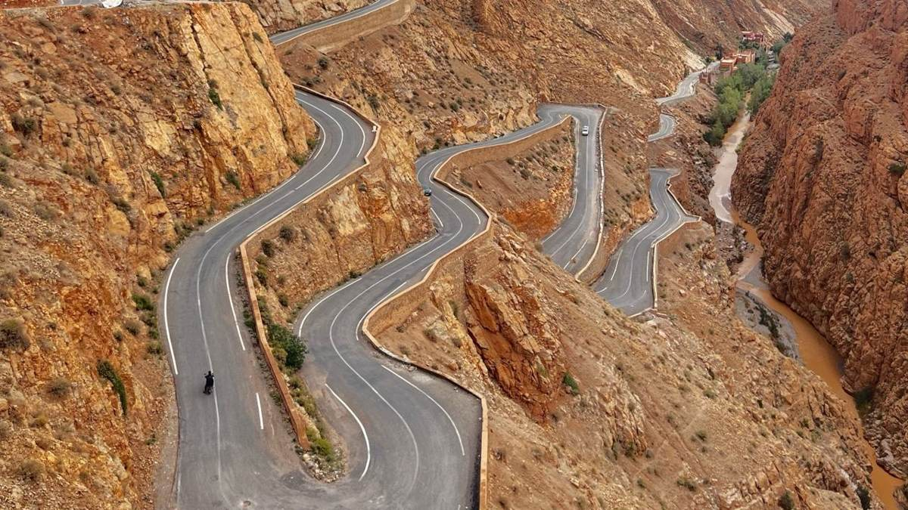
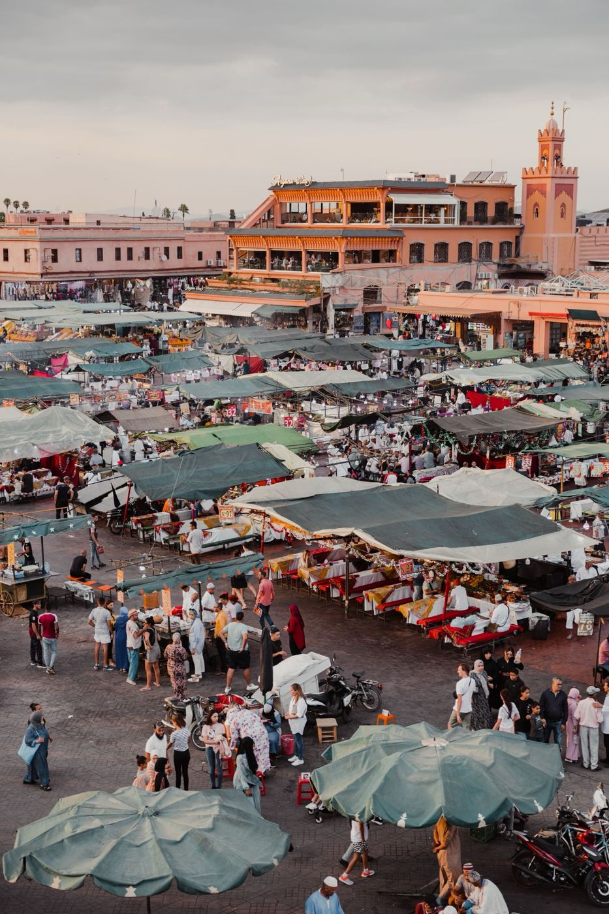
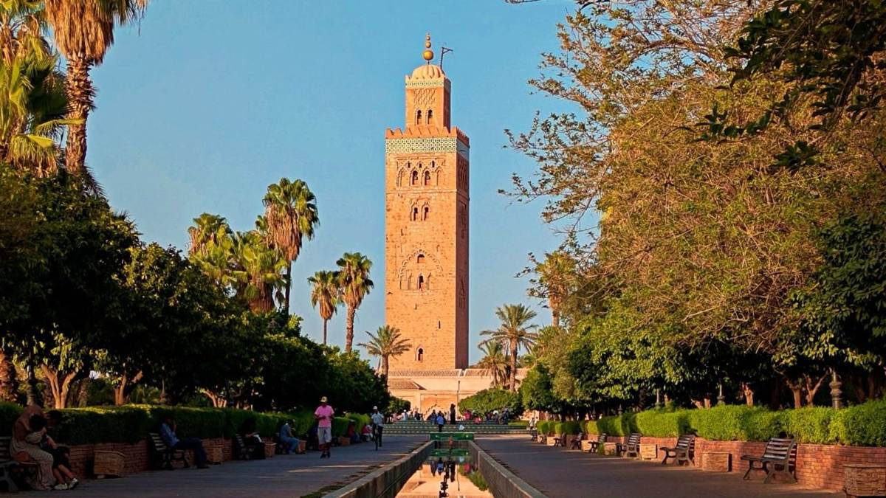
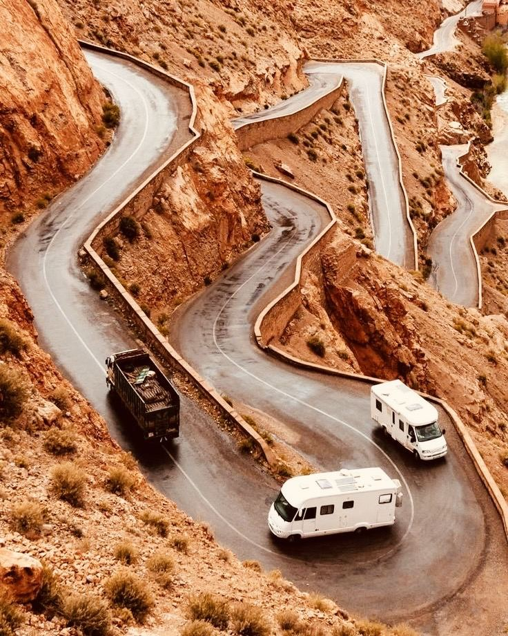
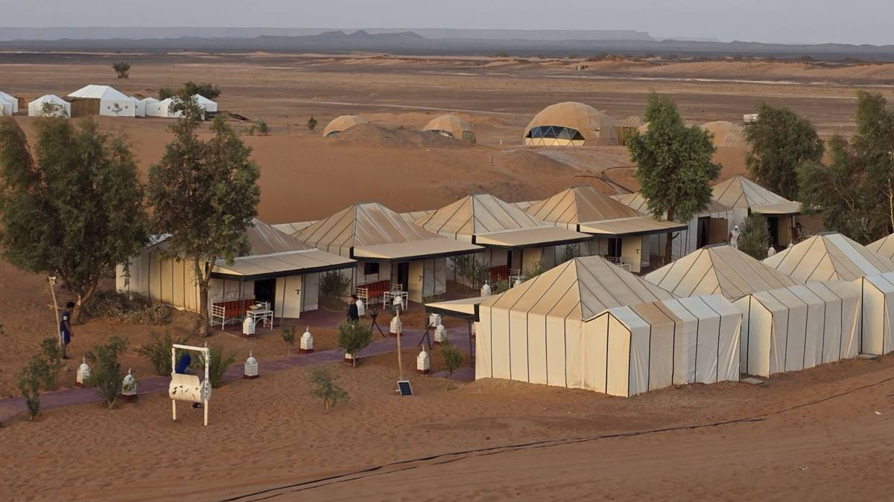
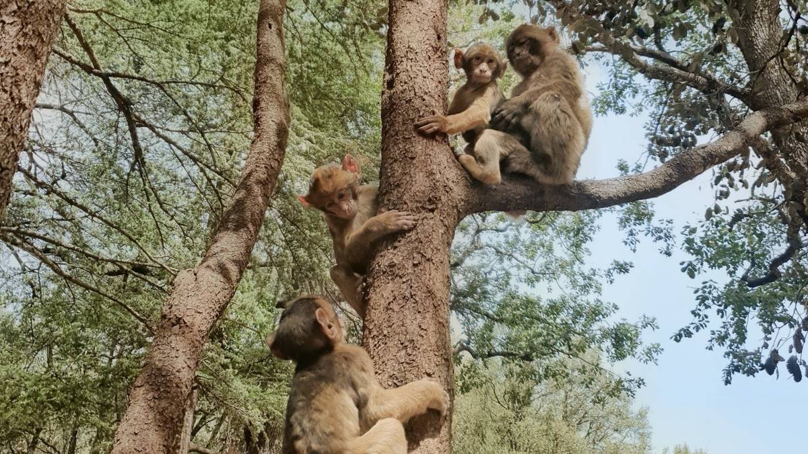
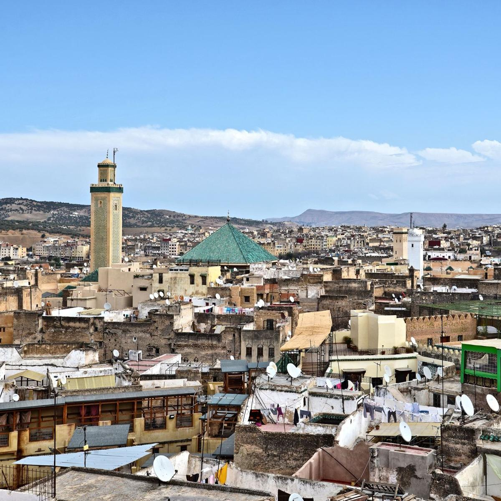
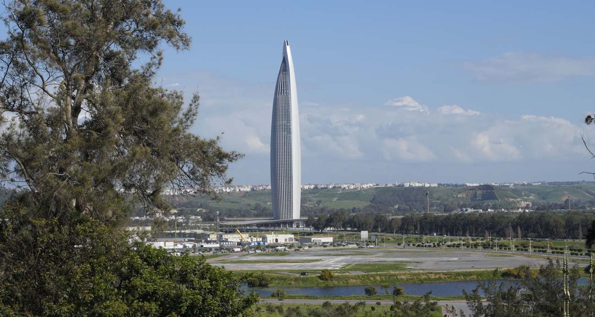

With 10 days, you can see Morocco properly. There is time for the four imperial cities, the Atlas Mountains, the kasbahs of the south, the Sahara dunes and even Chefchaouen or the Atlantic coast, at a pace that leaves room to enjoy a riad terrace, a long lunch or a sunset walk. This is the length of trip we recommend most to travellers who want to see "the real Morocco" without rushing.
Below you will find our complete 10-day itinerary from Marrakech, day by day, two alternatives starting from Casablanca or Tangier, and practical advice on driving times, seasons, budget and what to pack.

The 10-day itinerary at a glance
| Day | Route | Night |
|---|---|---|
| 1 | Arrival in Marrakech, Jemaa el-Fnaa | Marrakech |
| 2 | Guided tour of Marrakech | Marrakech |
| 3 | Tizi n'Tichka, Ait Benhaddou | Ouarzazate |
| 4 | Skoura, Valley of Roses, Dades Gorge | Dades |
| 5 | Todra Gorge, Merzouga, camel ride | Desert camp |
| 6 | Sahara sunrise, Ziz Valley | Midelt |
| 7 | Middle Atlas, Ifrane, cedar forest | Fes |
| 8 | Guided tour of Fes | Fes |
| 9 | Meknes, Volubilis | Rabat |
| 10 | Rabat, return to Marrakech or Casablanca | – |
Day by day
Day 1: Arrival in Marrakech
Your driver-guide meets you at the airport and takes you to your riad. In the evening, walk to Jemaa el-Fnaa, the great square of Marrakech, for food stalls, musicians and storytellers.

Day 2: Discover Marrakech
A guided day in the city: the Bahia Palace, the Saadian Tombs, the Koutoubia, the Ben Youssef Madrasa and the Majorelle Garden, then the souks for crafts, spices and lanterns. For a detailed plan, see Marrakech in 3 days.

Day 3: Over the Atlas to Ait Benhaddou
Cross the High Atlas over the Tizi n'Tichka pass (2,260 m), with stops in Berber villages and viewpoints. In the afternoon, explore Ait Benhaddou, the fortified village listed by UNESCO and famous as a film set (Gladiator, Game of Thrones). Night in Ouarzazate, the "Hollywood of Africa". Read more in Morocco's film locations.
Day 4: Skoura, the Valley of Roses and the Dades Gorge
Visit the Taourirt Kasbah, then drive through the palm grove of Skoura and the Valley of Roses around Kelaat M'Gouna, where rose water is made. In the afternoon, reach the Dades Gorge, with its red rock formations and the famous zigzag road. See our guide to the Dades Gorge road.

Day 5: Todra Gorge and the Sahara
Walk between the high walls of the Todra Gorge, then continue east through Erfoud and Rissani to Merzouga. At sunset, ride a camel into the Erg Chebbi dunes to your desert camp. Dinner, Berber drums around the fire and a sky full of stars.

Day 6: Sunrise and the Ziz Valley
Climb a dune for sunrise, then have breakfast in the camp. Drive north through the Ziz Valley, a long ribbon of palm trees in a rocky canyon, to Midelt, a quiet town in the foothills of the Middle Atlas.
Day 7: The Middle Atlas to Fes
Cross the cedar forests of Azrou, where you can see wild Barbary macaques, and stop in Ifrane, a mountain town with European-style houses. Arrive in Fes in the afternoon.

Day 8: Fes, the spiritual capital
A full day with a local guide in Fes el-Bali, the oldest medina in the world still in daily use: the Bou Inania Madrasa, the Al-Qarawiyyin area, the Nejjarine fountain, the Chouara tannery and the craftsmen's quarters of copper, wood and pottery.

Day 9: Meknes and Volubilis to Rabat
Visit Meknes, the imperial city of Moulay Ismail, with the Bab Mansour gate, then the Roman ruins of Volubilis and their mosaics. Continue to Rabat, the capital, for the night.
Day 10: Rabat and return
Discover the Kasbah of the Oudayas, the Hassan Tower and the Mausoleum of Mohammed V, then drive back to Marrakech, or to Casablanca airport, for your flight home.

👉 See the 10-day grand tour from Marrakech
Two alternatives
From Casablanca: with Chefchaouen
Casablanca and the Hassan II Mosque, Rabat, the blue city of Chefchaouen, Volubilis, Meknes and Fes, then the Sahara, the Dades Valley, Ait Benhaddou and two nights in Marrakech. The best choice if you want to see Chefchaouen.
👉 See the 10-day tour from Casablanca
From Tangier: for ferry travellers
Ideal if you come by ferry from Spain or fly into Tangier. Tangier, Chefchaouen, Fes, Merzouga, the Dades and Todra gorges, Ait Benhaddou and Marrakech.
👉 See the 10-day tour from Tangier
Want the coast too?
Add 1 or 2 days at the end to visit Essaouira, the blue and white port on the Atlantic, 3 hours from Marrakech. It is a relaxing way to finish a busy trip. See our Essaouira day trip.
7 or 10 days: what is the difference?
- Fewer hours in the car each day: the long Fes to Merzouga drive is split in two, with a night in Midelt.
- A full day in each great city: Marrakech and Fes both get a whole guided day.
- More places: Skoura, the Valley of Roses, Meknes, Volubilis and Rabat.
- Time to rest: afternoons in a riad pool or a hammam. See our hammam guide.
Short on time? Read our 7-day itinerary or How many days do you need in Morocco?
Best time for a 10-day trip
- March to May and September to November: ideal everywhere, from the cities to the desert.
- December to February: sunny days, cold nights in the desert and the mountains; perfect for Christmas and New Year. See New Year in the Sahara.
- June to August: very hot inland; we adapt the timing to visit the desert early and late in the day.
Budget
A 10-day private tour includes the vehicle and driver-guide for the whole trip, riads and hotels, the desert camp with camel ride, and most breakfasts and dinners. The price per person depends on the number of travellers and the level of accommodation. Read How much does a trip to Morocco cost? or ask us for a free quote with your dates.
What to pack
- Layers: T-shirts, a warm jacket for the desert nights and the Atlas.
- Comfortable walking shoes for the medinas.
- A scarf or hat, sunglasses and sunscreen.
- Clothes that cover shoulders and knees for visits to towns and villages.
- Some cash in dirhams for tips and small shops.
Full list in What to wear in Morocco.
Frequently asked questions
Is 10 days enough to see Morocco?
Yes. In 10 days you can see the imperial cities, the Atlas, the south and the Sahara at a comfortable pace. With 12 to 14 days you can add the coast or the far south.
Should I start in Marrakech or Casablanca?
It depends on your flights. Marrakech has many direct flights from Europe and is ideal for a loop. Casablanca is the main international hub and works well if you want to include Chefchaouen.
How many nights in the desert?
One night is enough to experience the camel ride, sunset, the camp and sunrise. If you love the desert, add a second night to explore Merzouga at a slower pace.
Is a private tour better than a group tour for 10 days?
On a long trip, a private tour makes a big difference: your own schedule, stops when you want and a guide who adapts to you. For families and groups of friends, it is often not much more expensive per person. See private vs group tours.
Keep reading: 7 days in Morocco · Desert camps in Merzouga · Hidden gems of Morocco